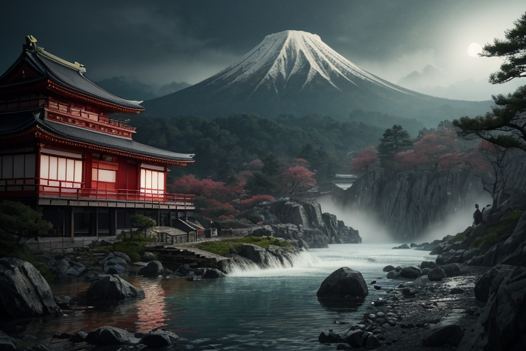
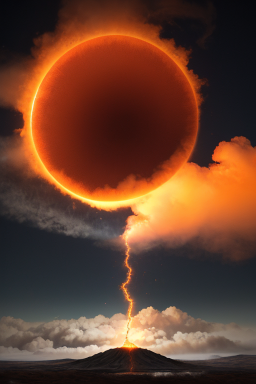
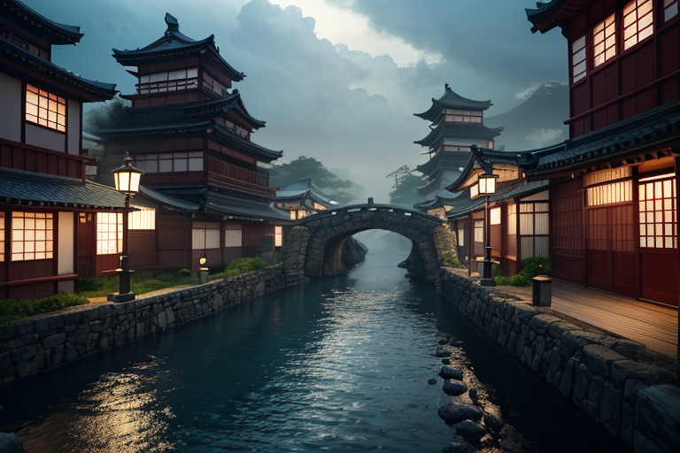
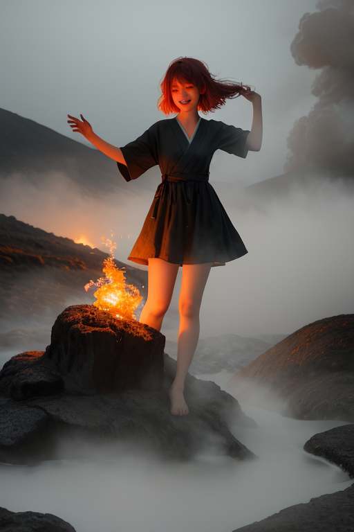
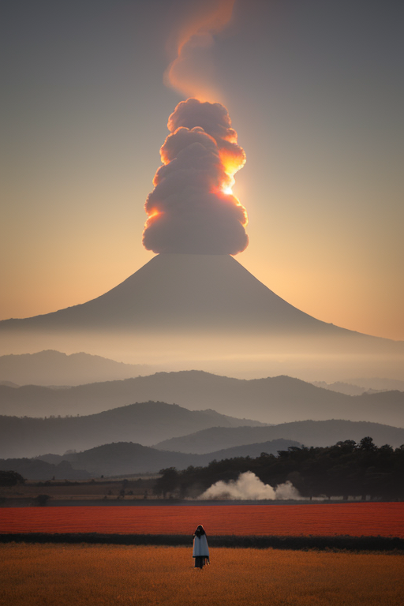

第一章 現実の群馬
あなたはまだ気づいていない。この土地にも、王がいることを。
草津温泉の湯畑から立ち上る湯煙は、白く、重く、地の底から吐き出される息のようだ。その熱気は、からっ風と呼ばれる乾いた風に吹かれても、すぐには消えない。山肌にへばりつくように、ゆっくりと渦を巻きながら空へと還っていく。富岡製糸場の赤レンガは、同じ風に百年以上吹きさらされてきた。窓ガラスは微かに震え、建物の内部では、かつて生糸を紡いだ機械たちの気配が、今も静かに滞留している。
ここは、歪みを封じるための土地だ。地下には膨大な熱が、巨大な蓋の下で煮えたぎっている。その蓋は目に見えず、ただ、時折、榛名山の山肌から漏れる硫黄の匂いや、尾瀬の湿原を覆う深い霧が、その存在を仄めかすだけである。人々は温泉に浸かり、水沢うどんを啜り、だるまに願をかける。日常は、どこか張り詰めた静けさの中に、確かに営まれている。
地熱は封じられている。それが、この土地の現実だ。しかし、封じたものは、いつか必ず、その蓋を揺さぶり始める。

第二章 歪みの兆候
草津温泉の湯畑から立ち上る湯煙が、いつもと違う渦を巻いていた。規則的な螺旋ではなく、乱れ、ちぎれ、まるで地底で何かが唸っているかのようだ。ヴェントラがその気流に指を触れると、妖精の細い眉がひそんだ。「王、圧が上がっています。封が、僅かに緩んでいる」
グンマリア・ヴェントは富岡製糸場の赤レンガの壁に背を預け、からっ風を受けていた。目を閉じ、風に乗せられてくる土地の声を聞く。遠く榛名山の地鳴り、尾瀬の水脈のうねり。そして、何よりも、巨大な蓋の下で沸騰し、逃げ場を求めて蠢く熱のうめき。彼を動かす風は、この「封じられたもの」の息吹そのものだった。自由を渇望するその鼓動が、彼の心臓と共振する。
「調整を強めよ」王の声は静かだが、その目には、封じ込められたものへのある種の共感が、危うい輝きを宿していた。オンセンナが湯気の衣を翻し、各所の温泉源へと散っていく。彼らは蓋を押さえ続ける番人。しかし、押さえつけるほどに、その下の熱は、より激しく彼らを呼ぶ。

第三章 王の葛藤
草津温泉の湯畑から立ち上る湯煙は、いつもより濃く、重かった。ヴェントラが気流を操り、地中の圧を上空へ逃がそうとするが、熱は逃げ場を失い、より深く蠢く。
「王よ、このままでは……」オンセンナの声が震える。彼女の体を構成する湯気が、地熱の鼓動に引き寄せられ、かすかに震えている。押さえ込むこと。それが使命だ。しかし、グンマリア・ヴェントの胸中には、別の風が吹き始めていた。封印された熱が、自由を求めて唸るそのうめき。それは、彼がこの地で感じた「上州のからっ風」の、あまりにも不自由な反転だった。からっ風は何ものにも遮られず吹き抜ける。この熱は、何ものにも遮られず噴き上がりたいのか。
彼を動かす風は何か。秩序を維持する冷たい風か、それとも、この圧倒的な熱の解放を求める、渦巻く熱風か。富岡製糸場のレンガが近代化という名の秩序を象徴するなら、ここにあるのは、それ以前の、原初の奔流だ。彼は自問した。調整者である自分が、共鳴し、解放を欲するこの衝動は、果たして「感情」という名の歪みなのか。それとも、もっと根源的な何かなのか。彼は、灰と橙の紋章が微かに輝く自分の手のひらを見つめた。

第四章 妖精との対話
「王よ、あなたを動かす風は何ですか。」
ヴェントラの声は、湯煙の中を漂うかすかな気流のようだった。彼女は、榛名山の麓、封じられた旧噴気孔の傍らに佇んでいる。その目は、自由奔放な妖精らしからぬ、深い憂いを宿していた。
「この『地熱封』は、単なる抑制ではありません。かつて、あまりにも奔放だったこの地の熱が、多くのものを焼き、多くのものを変質させた。その記憶の封じ込めです。富岡のレンガが秩序を築いたように、ここでは『封じ』が秩序を保ってきた。」
オンセンナが湯煙の衣を翻しながら続ける。
「でも、封じたものは、いつか語りたがる。尾瀬の湿原が太古の記憶を水に溶かすように。この圧力は、語りかけです。解放を、ただ求めるのではなく……その意味を、問いかけているのです。」
風王は、妖精たちの言葉を、肌を刺すからっ風のように感じた。彼を動かす風。それは、もはや単なる調整の指令ではない。封じられた熱の呻きと、この地が育んだ上州の気質——逆境にも揺るがぬ、しかし内に滾る何か——が混ざり合い、渦を巻いていた。彼は、自らの内側に、同じ渦が存在することに、今、気付き始めていた。

第五章 微調整と余韻
榛名山の裾野に広がる富岡製糸場の赤レンガは、午後の斜光を静かに浴びていた。風王は、その屋根の上に立つ。彼の手から、微かな橙の風が流れ出し、地中深く、歪みの列島に絡みつく巨大な「ひずみ」の一本へと向かう。それは、修復ではない。完全な封印でもない。圧力を逃がす小さな弁を、湯煙の妖精たちの協力で開き、その熱を、周囲の温泉地へと分散させる、精緻な微調整だ。
尾瀬の湿原を渡る風が、ほんの少し温かさを帯びる。草津温泉の湯煙が、いつもより濃く立ち上る。代償として、群馬のからっ風は、この数日間、かつてないほどの乾いた熱気を含むことになるだろう。畑を守るため、人々は知恵を絞る。風王はその予感を、灰の瞳に宿していた。
彼を動かす風。それは、もはや星からの指令ではない。封じ込められた熱の呻きと、それに抗い、しかし共存しようとするこの土地の気質が混ざり合った、複雑な気流だ。彼は感情という名の風を内に感じ、それを調整の力へと昇華させた。ただ、その風が、いつか彼自身をどこへ連れ去るかは、まだ誰にもわからない。
あなたの町にも、王がいる。